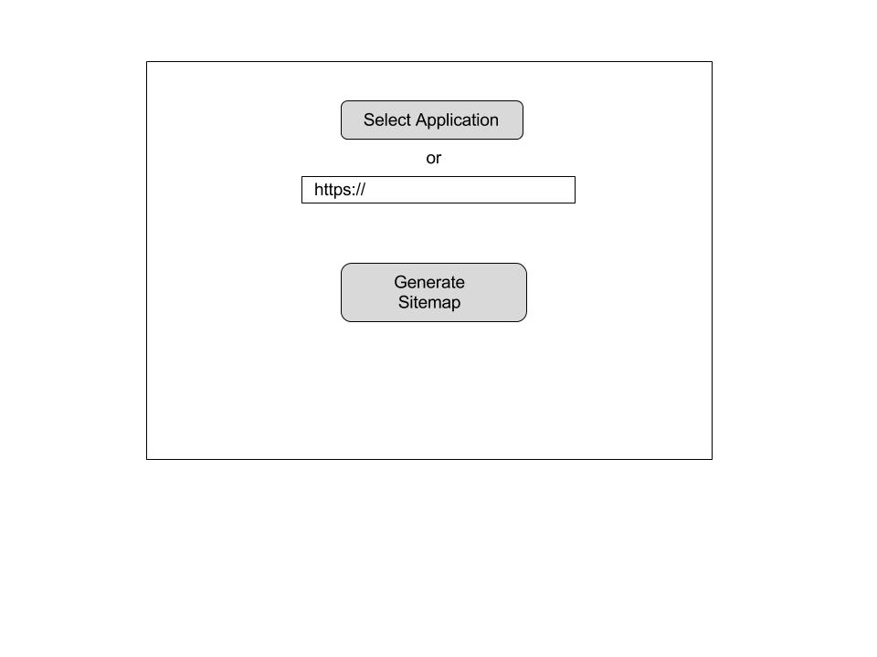

January 4th, 2017
This is my first blog post ever. I hope to use this blog as a space to write about
software engineering, how it affects my life, and record discoveries I have made
in my scientific expereince. Today I would like to describe my thoughts on tech interviews.
Tech interviews tend to vary. Some are very conventional, and stick to the book. These conventional 'big 4' interviews
usually look the same way:
they call for an initial interview, and that usually leads to a technical interview where
the engineer codes on some sort of live chat client, and if the interview goes well,
they fly them to the tech campus and give them a white board interview.
Today I had a tech interview that I hope goes really well.
I was really impressed with the professionalism of the engineers. And I have not worked at
a company that has it's own designer in a while. The professionals there were very approachable
and gave me confidence that I can grow there as a software engineer, and as a Computer Scientist.
This interview struck me because it seemed like the hiring manager actually picked up on my gerneralist
tendencies, and my ability to wear a lot of different hats. Having a company make me feel appreciated for
my efforts to be an well rounded person, scientist, and engineer was a very positive experience.
Regardless of the outcome, I think I have finished my day a little smarter, which is all I really
love to keep me happy.
January 5th, 2017
I want this post to be more technical. I spent the last few days writing
coffescript to implement an npm module
that I will only refer to anonymously, because I disliked it so much.
Part of the reason I came off with a bad feeling for it was because the tutorial
was hard to implement. The command that I ended up stopping at was:
curl -X POST -d '{"name":"Create Example Project","category":"Simple Blog Post"}'
Getting frustrated here was sort of positive because I ended up reading some
curl docs and finding out a question that I have had for ages:
What does the 'c' in curl stand for?
It stands for client.
Another positive from the exercise was that I wrote my first coffeescript (super readable).
And beyond that I was very frustrated.
It wasnt't until I coded that entire the tutorial that I realized that it was written in 2013.
Holy shit. There could be a million reasons why my version was not working, and even if the
developer did end up seeing my lame comment requesting help, it really helps no one since it is so old.
My final opinion about tutorials in this post, is that it really frustrates me that they usually assume
that readers immediately understand the file structure of a project, including the levels of directories.
Although I am sure it is very simple to them, a simple diagram of the location of diagrams could save tons of time.
So: Read the date. Diagram your files.
--D
January 6th, 2017
I had a very good day today. It started with some inspiration last night.
I have been having my head in the space of UX/UI implimentation for
a few months, and an interview I had a few days ago got me thinking about
what kinds of tools would be helpful in that kind of workflow. I was in bed
when I thought of the type of problems that come with applications and websites
that are dynamic, especially when assesing their current state. One problem that
I identified was the ability to generate sitemaps of existing websites. Is there a
way to create a site map that does not include a designer or programmer sitting
down and counting every single accessable interface by hand? This problem becomes
more difficult if you do not have access to a person who knows the project well,
or if the project is fairly unupdated or old.
So, I incepted a piece of software that has a working title of siteGen, which I do not like.
I would prefer to refrence some sort of Science Fiction or something. Simply, the idea is that
a user can select an Application of website url, and the program will generates sitemap
of enerything the app can do in it's current state.
I did a small wireframe to demonstrate how usable it woule be.

I intend to make a mockup of the app in c#.
On to other web worldy things that happened in my day. I was contacted by a linkedin recruiter
yesterday, and they were looking for a developer who had both python and Ember.js experience.
I immediately wanted to know all the Ember things (I already did some over the summer),
and then continued to star and watch their github page.
I also found this nice collection of ember things that I may explore if I ever decide or need to use
Ember again. Found here.
I also (kind of embarassingly) made some large strides in understanding
bootstrap, which, I had no idea was so simple.
I, instead of pouring over it's documentation, found a great cheat sheet guide that
is amazing for browsing web componants if you are not sure what kind of design you want.
Really helpful. Really dope.